Der Grammatik-Inspektor
Alle Ergebnisse der Grammatikanalyse für das aktive Dokument erscheinen im Tab Grammatik des Inspektors. Der Tab ist in sieben Facetten gegliedert. Die meisten davon befassen sich mit grammatischen Merkmalen des ausgewählten Wortes oder Satzes; zwei betreffen das ganze Dokument. Nutzen Sie diesen Tab, um den Aufbau einer Textstelle zu prüfen, bevor Sie mit dem Zählen, Abfragen oder Kodieren beginnen.
Alles, was dieser Tab zeigt, stammt aus der automatischen Grammatikanalyse, die LemmaLoom bei der Indizierung Ihres Dokuments vornimmt (siehe Kapitel 21, Analyse und Indizierung). Diese Analyse enthält gelegentlich Fehler, besonders in Transkripten gesprochener Sprache. Im Zweifel sehen Sie am besten in der Textstelle selbst nach.
Grundbegriffe
Die Facetten verwenden die folgenden Begriffe aus der Grammatikanalyse:
- Token bezeichnet die Einheit der Grammatikanalyse; so wird im Englischen couldn’t zu zwei Tokens, nämlich could und n’t, und der Punkt am Satzende ist ein eigenes Token. Tokens können Wörter oder Satzzeichen sein.
- Jedes Wort hat eine Wörterbuchform, das Lemma. So hat Regierenden das Lemma regierend und war das Lemma sein.
- Die Wortart eines Wortes ordnet es grob einer Kategorie wie Substantiv oder Verb zu. Tags sind feinere Kategorien; das englische Tag
NNSsteht zum Beispiel für ein Substantiv im Plural. Tags stammen aus Tagsets, die für jede Sprache eigens festgelegt sind. - Jedes Wort eines Satzes hängt von einem anderen Wort ab, seinem Kopf. In der Phrase die dringendsten Schritte hängen die und dringendsten beide von Schritte ab; Schritte ist also ihr Kopf. Nur ein Wort hängt von keinem anderen ab, meist das Hauptverb. Dieses Wort ist die Wurzel des Satzes.
- Abhängigkeiten geben mit Relationen an, wie ein Wort mit seinem Kopf verbunden ist. Relationen tragen Kürzel, etwa
sb(Subjekt) undoa(Akkusativobjekt) in deutschen odernsubj(nominales Subjekt) undamod(adjektivischer Modifikator) in englischen Dokumenten. LemmaLoom fasst die zahlreichen Relationen zu zehn Funktionen zusammen, darunter Subjekt, Objekt und Adverbial. Diese Funktionen sind die Aspekte der Lens Grammatische Funktion. Näheres finden Sie in der Beschreibung unter Grammatische Funktion in Kapitel 6, Lenses. - Ein Adverbial gibt an, wann, wo, wie oder warum etwas geschieht, etwa die Phrasen in diesem Sommer und in unserem Tal.
- Eine Phrase ist eine Folge von Wörtern, die zusammengehören. Beispiele sind Nominalphrasen wie eine wärmere Welt und Präpositionalphrasen wie auf einem Podium. Phrasen sind in andere Phrasen eingebettet, bis hinauf zum ganzen Satz. Häufige Bezeichnungen sind
NP(Nominalphrase),PP(Präpositionalphrase),VP(Verbalphrase) und weitere. - Ein Teilsatz ist eine Gruppe von Wörtern mit einem eigenen Verb als Kern, zum Beispiel weil sich ihre Wohnung in einen Backofen verwandelt hatte. Ein Satz kann mehrere Teilsätze enthalten.
Brauchen Sie eine Erklärung zu einem Kürzel, finden Sie unter Hilfe ▸ Glossar alle Tags, Relationen und Phrasenbezeichnungen jeder Sprache, in den Abschnitten Wortart-Tags, Dependenzrelationen und Phrasenbezeichnungen.
Die Facetten
Die Facetten erscheinen als Reihe von Schaltflächen unter den Tab-Symbolen des Inspektors.
| Facette | Gegenstand | Was sie zeigt |
|---|---|---|
| Grammatik | Das ausgewählte Wort | Lemma, Wortklasse, Tag, Funktion, Kopf und grammatische Merkmale des Wortes sowie seine anderen Verwendungen im Dokument |
| Satz | Der ausgewählte Satz | Nummer, Muster (nur Englisch), Länge, Wurzel und Phrasen des Satzes |
| Struktur | Der ausgewählte Satz | Drei Diagramme mit den Teilen des Hauptsatzes, den Verbindungen zwischen den Wörtern und den Phrasen |
| Form × Funktion | Das ganze Dokument | Wie oft jede Art von Phrase jede grammatische Aufgabe übernimmt |
| Kollokationen | Das ausgewählte Wort, im ganzen Dokument | Die Wörter, die ungewöhnlich oft in seiner Nähe vorkommen |
| Wortskizze | Das ausgewählte Wort, im ganzen Dokument | Seine grammatischen Partner, nach Relation gruppiert |
| Diskurs | Das ganze Dokument | Wie Sätze an frühere anknüpfen, die Wörter, mit denen Schreibende ihren eigenen Text kommentieren, und rhetorische Mittel |
Der ausgewählte Satz ist der Satz, der das angeklickte Wort enthält, oder der erste Satz der ausgewählten Textstelle. Solange Sie nichts ausgewählt haben, zeigen Grammatik und Kollokationen den Hinweis Ein Wort auswählen. Ebenso zeigen Satz und Struktur den Hinweis Einen Satz auswählen, und Wortskizze zeigt Ein Wort skizzieren.
Die Facette Wortskizze skizziert das Wort, das Sie in der Leseansicht auswählen. Für eine weitere Wortskizze geben Sie das gewünschte Wort in das Feld Wort ein und drücken Sie den Zeilenschalter. Mit den Schaltflächen zum Zurück- und Vorwärtsblättern gelangen Sie zu Wortskizzen, die Sie zuvor erstellt haben. Karte, Liste und Netz bestimmen, in welcher Form die Wortskizze dargestellt wird. Die Exportschaltfläche sichert die Wortskizze, und In einem Fenster öffnen öffnet sie im Fenster Wortskizze. Weitere Einzelheiten finden Sie in Kapitel 12, Wortskizze.


Den Tab Grammatik öffnen
Alle Dokumente in „Klimadebatte“ sind bereits indiziert (siehe Das Beispielprojekt in Kapitel 1, Einführung), Sie können ihre Grammatik also sofort untersuchen. Die meisten Beispiele in diesem Kapitel stammen aus dem Meinungsbeitrag „Uns läuft die Zeit davon“. Ein eigenes Dokument erhält seine Grammatik, sobald die Indizierung abgeschlossen ist. Bis dahin zeigt der Tab Die Grammatik wird verfügbar, sobald die Indizierung abgeschlossen ist.
So untersuchen Sie die Grammatik eines Dokuments:
- Öffnen Sie das Dokument in der Leseansicht.
- Wählen Sie Darstellung ▸ Inspektor ▸ Grammatik (⌥⌘2) oder klicken Sie auf das zweite Symbol am oberen Rand des Inspektors, eine Zeile von Wörtern mit Abständen. Der Menübefehl blendet den Inspektor auch ein, wenn er ausgeblendet ist.
- Klicken Sie auf eine Facette.
- Klicken Sie in der Leseansicht auf ein Wort oder wählen Sie eine Textstelle aus.
Die Facetten folgen der Auswahl in der Leseansicht. Wählen Sie in einer Facette ein Wort, eine Phrase oder einen Satz aus, wird dieselbe Stelle auch in der Leseansicht ausgewählt und ins Blickfeld gescrollt.
Jedes Dokument merkt sich die Facette, die Sie zuletzt gewählt haben. In der geteilten Ansicht beschreibt der Inspektor das Dokument im aktiven Bereich; klicken Sie in den anderen Bereich, zeigt er die Grammatik des dortigen Dokuments in derselben Facette (siehe Kapitel 9, Übersetzungen und geteilte Ansicht).
Unterstützte Sprachen
Dokumente können auf Englisch, Deutsch und Chinesisch indiziert werden. Fügen Sie ein Dokument in einer anderen Sprache hinzu, zeigt der Tab Grammatik stets Die Grammatik wird verfügbar, sobald die Indizierung abgeschlossen ist. Eine Übersetzung wird in ihrer eigenen Sprache indiziert; deshalb erhält „Uns läuft die Zeit davon (Englisch)“ eine englische Grammatik.
Die Facetten funktionieren in jeder dieser Sprachen, mit kleinen Unterschieden. Satz zeigt das Satzmuster nur bei englischen Dokumenten. Unter Diskurs haben deutsche Dokumente im Bereich Metadiskurs die zusätzliche Kategorie Modalpartikel, chinesische Dokumente dagegen Satzschlusspartikel unter Metadiskurs und Nullanapher unter Kohäsion. Nach zwei Mitteln unter Rhetorik wird nur in bestimmten Sprachen gesucht (siehe Rhetorik weiter unten in diesem Kapitel).
Jede Sprache hat ein eigenes Tagset, und die Facetten verwenden die Tags der jeweiligen Sprache. Englische Dokumente verwenden die Tags der Penn Treebank (etwa NNS und VBD), deutsche die des Stuttgart-Tübingen-Tagsets (NN und VVFIN) und chinesische die der Penn Chinese Treebank (NN und VV). Wortklassen, Funktionen und Phrasentypen sind in allen Sprachen gleich, ihre Farben bedeuten daher überall dasselbe.
Die Facette Grammatik
Die Facette Grammatik beschreibt ein einzelnes Wort. Sie zeigt, was das Wort ist, welche Funktion es im Satz hat, von welchem Wort es abhängt und wo es sonst im Dokument vorkommt. Mit dieser Facette prüfen Sie zum Beispiel, wie LemmaLoom die Wörter analysiert, bevor Sie eine Abfrage zu ihnen erstellen.
Die Abbildung zeigt die Facette Grammatik für Regierenden im Satz Unsere Regierenden haben auf die Warnungen mit Jahreszahlen geantwortet. aus dem Dokument „Uns läuft die Zeit davon“.
Von oben nach unten sehen Sie Folgendes:
- Das Wort, wie es im Text steht, mit seiner Wortklasse, hier Substantiv, in der Farbe der Lens Wortklasse.
- Lemma, hier regierend. Diese Zeile erscheint nur, wenn das Lemma vom Wort abweicht.
- Wortart, hier Substantiv · NOUN, also der Name und das zugehörige Kürzel aus dem universellen Schema, das alle drei Sprachen verwenden.
- Tag, hier Substantiv · NN. Tag ist das feinere Tag des Wortes aus dem Tagset der Sprache.
- FUNKTION zeigt die Relation zwischen dem Wort und seinem Kopf, hier Subjekt · sb, zusammen mit der grammatischen Funktion Subjekt in der Farbe dieser Funktion. Die Zeile darunter umschreibt die Relation als Subjekt von “haben” (Hilfsverb). Mehr über die Funktionen, auch über alle zehn im Einzelnen, steht unter Grammatische Funktion in Kapitel 6, Lenses. Für geantwortet im selben Satz lautet die Zeile Komplement von “haben” (Hilfsverb); nötig, um seine Bedeutung zu vervollständigen. Für Unsere lautet sie Modifiziert “Regierenden” (Substantiv); in der Funktion eines Adjektivs. Bei einer Relation, die zu keiner der zehn Funktionen passt, etwa
punctbeim Satzpunkt, fehlt die farbige Funktion; die Zeile darunter lautet dann Interpunktion von “haben” (Hilfsverb). - KOPF führt zum Kopf des Wortes. Die Zeile zeigt das Kopfwort haben als Link, gefolgt von seiner Wortart. So können Sie in einem Satz bis zu seiner Wurzel hinaufsteigen. Klicken Sie auf haben, beschreibt die Facette dieses Wort; seine Zeile FUNKTION lautet dann Wurzel des Satzes · ROOT, das Kennzeichen eines Wurzelworts. Unter KOPF steht Wurzel des Satzes, und die Zeile unter FUNKTION lautet Die Wurzel dieses Satzes.
- MORPHOLOGIE beschreibt die grammatischen Merkmale des Wortes, hier Kasus Nominativ und Grammatischer Numerus Plural. Das Hilfsverb haben zeigt in diesem Satz unter anderem Tempus Präsens und Verbform Finit, das Partizip geantwortet nur Verbform Partizip, und ein Substantiv wie Warnungen zeigt Kasus, Numerus und Genus. Einen Abschnitt MORPHOLOGIE haben nur Wörter mit morphologischen Merkmalen. Im Chinesischen werden Wörter nie nach Tempus oder Numerus gebeugt, daher erscheint der Abschnitt MORPHOLOGIE bei chinesischen Wörtern nicht.
- ANDERE VERWENDUNGEN IN DIESEM DOKUMENT listet die weiteren Stellen auf, an denen ein Wort mit demselben Lemma vorkommt.
Andere Verwendungen des Wortes
Der Abschnitt ANDERE VERWENDUNGEN IN DIESEM DOKUMENT zeigt bis zu 12 weitere Vorkommen des Lemmas. Zu jedem Vorkommen sehen Sie, wie das Wort dort geschrieben ist, seine Wortklasse und seine Rolle im Satz (etwa Substantiv · Objekt). Auch der Satz mit dem jeweiligen Vorkommen wird angezeigt; wählen Sie einen Eintrag aus, wird das zugehörige Vorkommen in der Leseansicht ausgewählt.
Einträge, in denen das Wort eine andere Wortklasse oder Funktion hat, stehen vor den übrigen; innerhalb jeder Gruppe folgen die Einträge der Reihenfolge im Dokument. Die Einträge der ersten Gruppe zeigen zwei sich kreuzende Pfeile, und wenn Sie den Mauszeiger darauf halten, erscheint Eine andere Form oder Funktion. Das bedeutet, dass sich die Form oder die Funktion des Wortes (oder beides) zwischen den beiden Vorkommen unterscheidet.
In „Uns läuft die Zeit davon“ ist Handeln in schnelleres Handeln würde zu viel kosten ein Substantiv, gehandelt in Wir dagegen haben bis heute nicht danach gehandelt aber ein Verb; beide haben das Lemma handeln. Wählen Sie das Substantiv aus, steht der andere Satz oben in der Liste, mit den Pfeilen, weil das Wort dort eine andere Wortklasse hat. Ein Substantiv, das in einem Satz Subjekt und in einem anderen Objekt ist, erhält die Pfeile ebenfalls. Die Pfeile kennzeichnen also grammatische Unterschiede, mit denen ein Unterschied in der Bedeutung einhergehen kann. Prüfen Sie mit der Liste, ob ein Wort, das Sie zählen oder kodieren wollen, im ganzen Dokument einheitlich verwendet wird.
Eine Textstelle auswählen
Wählen Sie statt eines Wortes eine Textstelle aus, beschreibt die Facette das Kopfwort dieser Textstelle, also das erste Wort, dessen Kopf außerhalb der ausgewählten Textstelle liegt. Bei die Warnungen ist das nur Warnungen, bei auf die Warnungen mit Jahreszahlen geantwortet dagegen geantwortet.
Die Facette Satz
Satz ist eine Facette mit einer kurzen Beschreibung des ausgewählten Satzes. Sie gibt Auskunft über den Bau des Satzes (sein Muster), seine Länge und die Phrasen, die er enthält.
Oben nennt die Facette die Nummer des ausgewählten Satzes, gezählt vom Anfang des Dokuments, etwa Satz 19. Reicht die Auswahl über mehrere Sätze, weist ein zusätzlicher Hinweis darauf hin, zum Beispiel Auswahl umfasst 3 Sätze, und die Beschreibung gilt nur dem ersten Satz.
Unter der Satznummer folgen diese Angaben:
- Bei englischen Dokumenten das Satzmuster, dargestellt durch eine knappe Formel wie S · V · DO, der Name des Musters (bei dieser Formel Transitiv) und eine Beschreibung dazu (siehe Satzmuster weiter unten).
- Wörter, die Zahl der Tokens im Satz. Satzzeichen werden dabei mitgezählt; Unsere Regierenden haben auf die Warnungen mit Jahreszahlen geantwortet. hat deshalb 10 Tokens.
- WURZEL, das Wurzelwort als Link. Ein Klick auf das Wort unter WURZEL wählt es in der Leseansicht aus.
- PHRASEN, sämtliche Phrasen, die die Grammatikanalyse im Satz erkannt hat, vom Satz selbst bis hinunter zu Phrasen aus einem einzelnen Wort.
Die Zeilen unter der Überschrift PHRASEN zeigen jeweils die Bezeichnung der Phrase (etwa NP, in der Farbe ihres Phrasentyps), den Phrasentyp selbst (etwa Nominalphrase) und die zugehörigen Wörter. Sie folgen der Reihenfolge im Satz; Phrasen, die beim selben Wort beginnen, sind nach absteigender Länge geordnet. Ein Klick auf eine Zeile wählt die Phrase in der Leseansicht aus. Ist ein Wort ausgewählt, sind die Zeilen aller Phrasen hinterlegt, die dieses Wort enthalten.
Satzmuster
Englische Hauptsätze folgen einigen wenigen Grundmustern, je nachdem, was das Hauptverb verlangt (nichts, ein Objekt, zwei Objekte, eine Beschreibung des Subjekts und so weiter). Die Facette Satz ordnet jeden englischen Satz einem von zehn möglichen Mustern zu.
| Muster | Formel | Beispiel |
|---|---|---|
| Intransitiv | S · V | Two students fainted. |
| Transitiv | S · V · DO | We do not need another report. |
| Ditransitiv | S · V · IO · DO | The mayor gave every school a heat plan. |
| Komplex transitiv | S · V · DO · OC | The drought left the fields bare. |
| Kopulativ | S · LV · SC | We feel frightened. |
| „Be“ + Komplement | S · be · SC | None of this is radical. |
| „Be“ + Adverbiale | S · be · ADV | The cooling center is in the library. |
| Imperativ | (You) · V | Come to the farm gate. |
| Frage | ? | What exactly are we waiting for? |
| Fragment | ein Strich | Net zero by 2050. |
In den Formeln oben steht S für das Subjekt, V für das Verb, DO für das direkte Objekt und IO für das indirekte Objekt. SC ist das Subjektsprädikativ, ein Substantiv oder Adjektiv, das das Subjekt beschreibt. OC ist das Objektsprädikativ, das das Objekt beschreibt. LV steht für ein Kopulaverb, ADV für ein Adverbial. Die Definitionen finden Sie unter Hilfe ▸ Glossar im Abschnitt Abkürzungen und Symbole.
LemmaLoom prüft die Muster in der folgenden Reihenfolge und zeigt das erste, das passt:
- Ein Satz, der mit einem Fragezeichen endet oder den die Grammatikanalyse als Frage analysiert, ist eine Frage.
- Ein Satz, dessen Wurzel kein Verb ist, ist ein Fragment, es sei denn, die Phrasenanalyse findet darin einen Teilsatz (eine Bezeichnung wie
SoderSBAR); dann ist er Intransitiv. Ein Satz, in dem die Analyse keine Wurzel findet, ist ebenfalls ein Fragment. - Ein Satz, dessen Hauptverb in der Grundform steht und der kein Subjekt hat, ist ein Imperativ. Be ist von dieser Prüfung ausgenommen; Be careful zählt deshalb als „Be“ + Komplement (Regel 4).
- Ist das Hauptverb be, ist der Satz „Be“ + Komplement, wenn ein Substantiv oder Adjektiv folgt, das das Subjekt beschreibt. Andernfalls ist er „Be“ + Adverbiale, wie in She was on her front step until three.
- Folgt auf ein Kopulaverb ein Prädikativ, ist der Satz Kopulativ. Als Kopulaverben gelten seem, become, appear, feel, look, taste, smell, sound, remain, prove, stay, grow, turn, get und go.
- Hat er ein direktes Objekt mit Objektsprädikativ, ist er Komplex transitiv.
- Hat er ein indirektes und ein direktes Objekt, ist er Ditransitiv.
- Hat er nur ein direktes Objekt, ist er Transitiv.
- Alles andere ist Intransitiv.
Ein Muster deutet an, in welchem Rahmen jemand ein Geschehen darstellt. Der Satz We block the roads ist zum Beispiel Transitiv, und die schreibende Person wirkt auf etwas ein. Der Satz We feel frightened dagegen ist Kopulativ und beschreibt einen Zustand.
Die Muster beziehen sich nur auf Hauptsätze. In I think we need a plan folgt auf das Hauptverb think zum Beispiel ein Teilsatz und kein Objekt; der Satz gilt deshalb als Intransitiv, obwohl need in seinem Teilsatz ein Objekt hat. In Kolumnen und Debatten sind Sätze, die mit I think beginnen, daher meist Intransitiv. Liest die Analyse einen Satz falsch, spiegelt das zugewiesene Muster diesen Fehler wider, und die Facette Struktur zeigt, wie die Analyse den Satz gelesen hat.
Die Facette Struktur
Die Facette Struktur zeigt den ausgewählten Satz in drei untereinander angeordneten Diagrammen, unter den Überschriften Aufbau, Dependenzgraph und Konstituentenbaum. Wählen Sie in diesen Darstellungen ein Element aus, wird es auch in der Leseansicht ausgewählt.
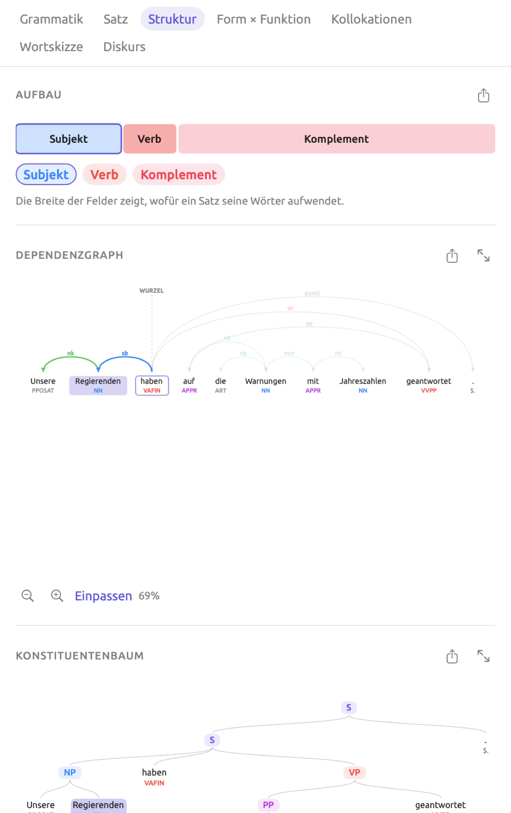
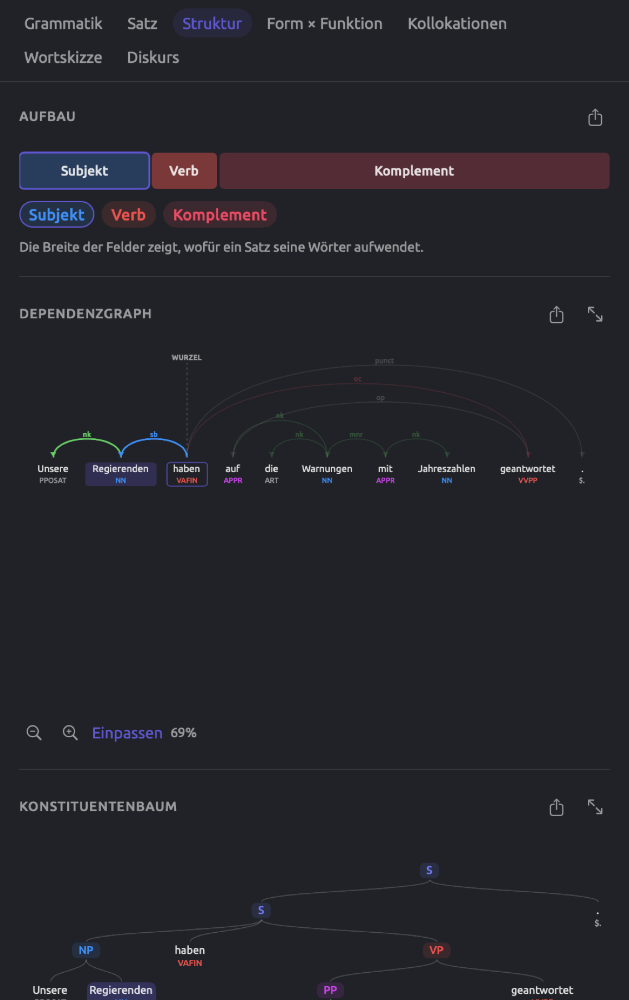
Aufbau
Der Balken Aufbau teilt einen Satz in die verschiedenen Teile seines Hauptsatzes auf. Der Abschnitt Verb enthält das Hauptverb zusammen mit allen Hilfsverben und dem not, die dazugehören. Jeder andere Abschnitt enthält ein Element, das direkt vom Hauptverb abhängt, mit allen Wörtern, die dazugehören; das kann das Subjekt sein, ein Objekt oder ein Adverbial.
Die Abschnitte sind nach ihrer Funktion benannt und in der Farbe dieser Funktion gefärbt. Teile, die zu keiner Funktion passen, erscheinen grau und tragen den Namen ihrer Relation, und der Abschnitt Verb ist kräftiger getönt als die übrigen.
Die Breite jedes Abschnitts ist proportional zur Zahl seiner Tokens. Für den Satz Unsere Regierenden haben auf die Warnungen mit Jahreszahlen geantwortet. hat der Balken deshalb drei unterschiedlich breite Abschnitte, Subjekt (Unsere Regierenden, 2 Tokens), Verb (haben, 1) und Komplement (auf die Warnungen mit Jahreszahlen geantwortet, 6). Abschnitte mit sehr wenigen Tokens werden etwas breiter gezeichnet, damit sie sichtbar bleiben.
Unter dem Balken steht für jeden Abschnitt eine Schaltfläche. Jede Schaltfläche zeigt den Namen und die Farbe ihres Abschnitts. Ein Klick auf eine Schaltfläche wählt die Wörter ihres Abschnitts in der Leseansicht aus; ein Klick auf den Abschnitt im Balken selbst bewirkt dasselbe.
In der Grammatikanalyse deutscher Sätze wird das finite Verb (die Verbform, die sich nach dem Subjekt richtet) zur Wurzel des Satzes, nicht das Hauptverb. Im Beispielsatz enthält der Abschnitt Verb deshalb nur haben. Ebenso enthält bei Die Wissenschaft hat ihre Arbeit eindeutig getan der Abschnitt Verb das finite Verb hat, während das Partizip getan mit den Wörtern, die von ihm abhängen, einen eigenen Abschnitt Komplement bildet (ihre Arbeit eindeutig getan).
Dependenzgraph
Der Dependenzgraph stellt grafisch dar, welches Wort der Kopf jedes Wortes im Satz ist. Die Wörter stehen in der Reihenfolge des Satzes auf einer waagerechten Linie, unter jedem Wort sein Tag, gefärbt nach Wortklasse. Bögen verbinden jedes Wort mit seinem Kopf. Die Pfeilspitze zeigt auf das abhängige Wort, und über dem Bogen steht das Kürzel der Relation, gefärbt nach Funktion. Eine gestrichelte Linie verbindet schließlich die Wurzel mit WURZEL darüber.
Im Satz Unsere Regierenden haben auf die Warnungen mit Jahreszahlen geantwortet. gehen von haben drei Bögen aus, nämlich sb (Regierenden), oc (geantwortet) und punct (der Punkt). Unsere modifiziert Regierenden als nk, und auf hängt als op von geantwortet ab. Warnungen hängt als nk von auf ab und die als nk von Warnungen; mit hängt als mnr von Warnungen ab und Jahreszahlen als nk von mit.
Kürzere Bögen werden tiefer gezeichnet. Überspannt ein Bogen einen anderen, wird er höher gezeichnet; daran sehen Sie, wie verschachtelt der Satz ist. Halten Sie den Mauszeiger auf ein Relationskürzel oder ein Tag, um den vollen Namen zu sehen, etwa Subjekt für sb oder Substantiv für NN. Englische Dokumente verwenden eigene Relationskürzel, etwa nsubj (nominales Subjekt) und dobj (direktes Objekt) statt der deutschen sb (Subjekt) und oa (Akkusativobjekt). Chinesisch verwendet die meisten englischen Kürzel, hat aber Ergänzungen wie nmod:topic für ein Topik.
Klicken Sie auf ein Wort, um es auszuwählen. Ausgewählte Wörter werden hinterlegt, ihr Kopf wird umrandet. Außerdem werden alle Bögen, die von den ausgewählten Wörtern ausgehen oder zu ihnen führen, dicker gezeichnet, und die übrigen Bögen verblassen.
Der Dependenzgraph ist die richtige Anlaufstelle, wenn Ihnen unklar ist, wie ein Satz aufgebaut ist. Nehmen Sie den Beispielsatz. Die Präpositionalphrase mit Jahreszahlen kann geantwortet modifizieren (die Regierenden antworten mit Jahreszahlen) oder Warnungen (Warnungen, die Jahreszahlen nennen). Suchen Sie den Bogen, dessen Pfeilspitze mit berührt; das Wort am anderen Ende, geantwortet oder Warnungen, zeigt die Lesart, die die Analyse gewählt hat. Hier ist es Warnungen. Eine falsche Entscheidung an dieser Stelle wirkt sich auf die Lens Grammatische Funktion, die Satzmuster, Form × Funktion und Wortskizzen aus.
Konstituentenbaum
Der Konstituentenbaum zeigt, wie sich die Wörter zu Phrasen gruppieren. Ganz oben steht der vollständige Satz, meist mit der Bezeichnung S. Jede Phrase gliedert sich in die kleineren Phrasen und einzelnen Wörter, die sie enthält. Ein Wort hängt unter der kleinsten Phrase, zu der es gehört, zusammen mit seinem Wortart-Tag. Ein Wort in einer tief verschachtelten Phrase steht deshalb tiefer als Wörter in weniger verschachtelten Phrasen. Jeder Phrasentyp hat eine eigene Farbe nach dem Farbschema der Lens Phrase (siehe Phrase in Kapitel 6, Lenses). Teilsätze haben eine eigene Farbe.
Im Beispielsatz zerlegt der Konstituentenbaum den Satz S in die Nominalphrase Unsere Regierenden, das Wort haben und die Verbalphrase auf die Warnungen mit Jahreszahlen geantwortet. Diese Verbalphrase enthält die Präpositionalphrase auf die Warnungen mit Jahreszahlen, in der wiederum die Präpositionalphrase mit Jahreszahlen steckt. Die Aufteilung, die Sie sehen, kann von der hier beschriebenen abweichen.
Halten Sie den Mauszeiger auf eine Bezeichnung, um den vollen Namen der Phrase zu sehen, etwa Präpositionalphrase für PP, Teilsatz für S oder in englischen Dokumenten Nebensatz für SBAR. Klicken Sie auf eine Bezeichnung oder auf ein Wort, um die zugehörige Phrase oder das Wort in der Leseansicht auszuwählen. Findet die Grammatikanalyse in einem Satz mehrere Teile, fasst der Konstituentenbaum sie alle unter einer weiteren, übergeordneten Bezeichnung S zusammen.
Die Bezeichnungen hängen von der Sprache ab. Englisch verwendet die Bezeichnungen der Penn Treebank wie NP, VP, PP und SBAR. Deutsch verwendet AP für Adjektivphrasen und AVP für Adverbphrasen. Die chinesischen Bezeichnungen folgen den Konventionen der Penn Chinese Treebank, mit IP für einen Teilsatz und DNP für eine Phrase mit 的.
Zoomen und Scrollen
Dependenzgraph und Konstituentenbaum erscheinen zunächst auf die Breite des Inspektors skaliert, höchstens aber in Originalgröße. Ein langer Satz erscheint deshalb anfangs recht klein. Der Balken unter Aufbau wird immer in der Breite des Inspektors gezeigt. Unter dem Dependenzgraphen und dem Konstituentenbaum liegt jeweils eine Zoomleiste:
- Verkleinern und Vergrößern, die Lupen mit Minus- und Pluszeichen, verkleinern oder vergrößern das Diagramm mit jedem Klick um den Faktor 1,25, bis die untere oder obere Grenze erreicht ist. Dann ist die betreffende Lupe deaktiviert und zeigt den Tooltip Maximal verkleinert oder Maximal vergrößert.
- Einpassen skaliert das Diagramm wieder auf die Breite des Inspektors.
- Die Prozentangabe zeigt die relative Größe des Diagramms, die immer zwischen 25 % und 600 % liegt.
Außer mit den Schaltflächen können Sie auf dem Trackpad zoomen, indem Sie zwei Finger auseinander- oder zusammenziehen, und durch das Diagramm scrollen, wenn es nicht in den Inspektor passt. Solange Sie nicht selbst gezoomt haben, passt sich das Diagramm an, wenn Sie die Breite des Inspektors ändern. Wählen Sie einen anderen Satz aus, bleibt die Zoomstufe erhalten; klicken Sie auf Einpassen, um den neuen Satz einzupassen. Mehr Platz bietet bei Bedarf das Fenster Diagramm.
Das Fenster Diagramm
Das Fenster Diagramm zeigt einen Dependenzgraphen oder einen Konstituentenbaum in beliebiger Größe, bis hin zum Vollbild. Um es zu öffnen, klicken Sie in der Facette Struktur neben Dependenzgraph oder Konstituentenbaum auf In einem Fenster öffnen (das Symbol mit zwei diagonalen Pfeilen).
Das Fenster Diagramm öffnet sich mit dem gewählten Diagramm. Mit Dependenz und Konstituenz oben links wechseln Sie zwischen den beiden Diagrammen. Die beiden Pfeile oben rechts (Vorheriger Satz und Nächster Satz) führen durch das Dokument, und der Text daneben zeigt, welchen Satz Sie gerade sehen (etwa Satz 19 von 66).
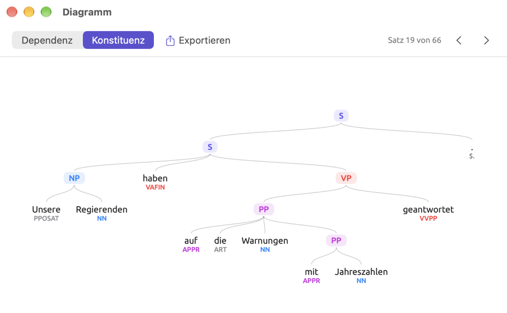
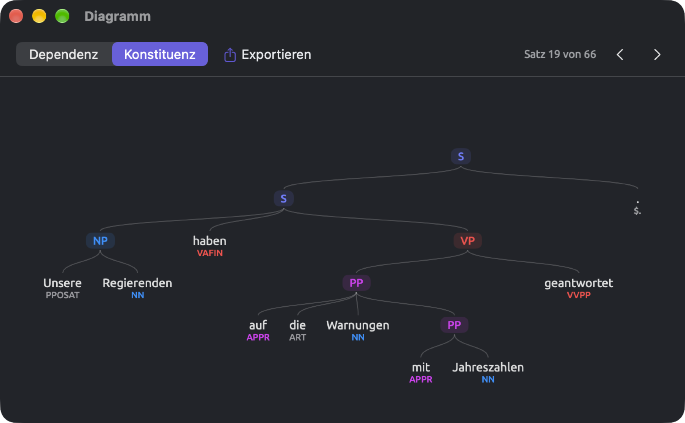
Das Fenster Diagramm zeigt immer den ausgewählten Satz des aktiven Dokuments. Klicken Sie in der Leseansicht auf ein Wort in einem anderen Satz, folgt das Fenster Diagramm. Ein Klick auf einen Pfeil wählt das Wurzelwort des nächsten oder vorherigen Satzes aus und scrollt die Leseansicht dorthin; beim ersten und beim letzten Satz ist der Pfeil, der weiterführen würde, deaktiviert und zeigt den Tooltip Bereits an erster Stelle oder Bereits an letzter Stelle. Klicken Sie im Diagramm auf ein Wort oder eine Phrase, wird diese Stelle auch in der Leseansicht ausgewählt.
Beim Öffnen des Fensters wird das Diagramm ins Fenster eingepasst, höchstens aber in Originalgröße. Unten rechts im Fenster Diagramm liegt eine Zoomleiste, die ähnlich wie die im Inspektor funktioniert und von 10 % bis 800 % reicht. Einpassen passt hier das ganze Diagramm ins Fenster ein. Weitere Möglichkeiten, die Ansicht zu ändern:
- Zoomen Sie mit zwei Fingern auf dem Trackpad oder mit den Menübefehlen Darstellung ▸ Vergrößern (⌘+) und Darstellung ▸ Verkleinern (⌘-).
- Wählen Sie Darstellung ▸ Originalgröße (⌘0), um das Diagramm in Originalgröße zu sehen.
- Doppelklicken Sie auf das Diagramm oder wählen Sie Darstellung ▸ An Fenster anpassen, um es ins Fenster einzupassen.
- Ziehen Sie das Diagramm oder scrollen Sie mit zwei Fingern, um sich im Diagramm zu bewegen.
Wenn Sie von Satz zu Satz gehen, behält das Fenster Diagramm die aktuelle Zoomstufe und Position bei. Doppelklicken Sie oder klicken Sie auf Einpassen, um ein neu geladenes Diagramm einzupassen. Ist in der Leseansicht kein Satz ausgewählt, zeigt das Fenster Diagramm den Hinweis Einen Satz auswählen.
Ein Diagramm exportieren
Jede der drei Überschriften in der Facette Struktur hat eine Exportschaltfläche, ein Quadrat mit einem Pfeil. Im Fenster Diagramm selbst steht das Menü Exportieren neben Dependenz und Konstituenz.
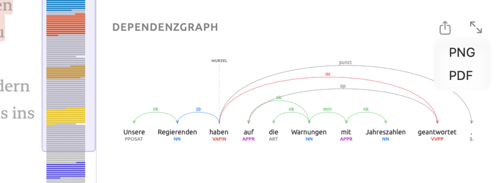
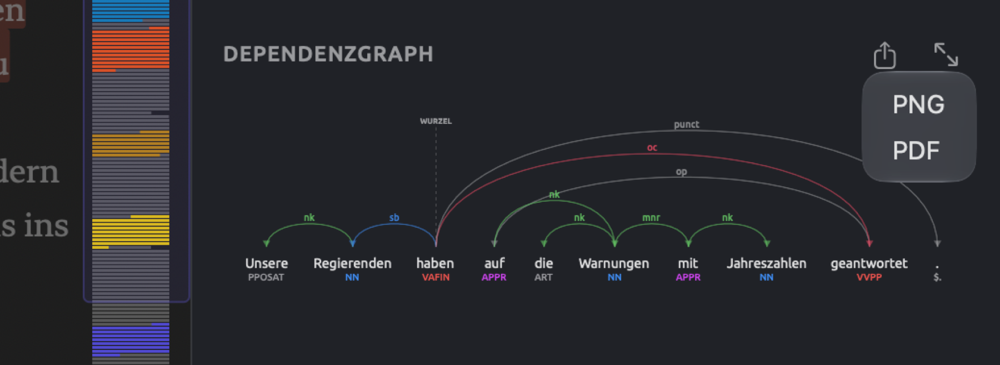
So exportieren Sie ein Diagramm:
- Klicken Sie auf die Exportschaltfläche und wählen Sie PNG oder PDF.
- Wählen Sie im Dialog zum Sichern einen Namen und einen Ort. Der vorgeschlagene Name nennt das Diagramm und die Satznummer, etwa
arcs-sentence-19für einen Dependenzgraphen,tree-sentence-19für einen Konstituentenbaum undanatomy-sentence-19für einen Balken unter Aufbau. - Klicken Sie auf Sichern.
Das Diagramm wird unabhängig vom Zoom in Originalgröße gesichert. Der Balken unter Aufbau wird 640 Punkte breit exportiert. PNG-Dateien sind Bilder in doppelter Auflösung, ausreichend für Präsentationen und für Dokumente in einer Textverarbeitung. Für den Druck wählen Sie PDF, denn dieses Format bleibt in jeder Größe scharf.
PNG- und PDF-Dateien verwenden beide das gewählte Farbthema; ein Diagramm mit dunklem Thema hat also einen dunklen Hintergrund. Brauchen Sie ein Diagramm mit weißem Hintergrund, stellen Sie vor dem Export in den Einstellungen im Bereich Allgemein unter Erscheinungsbild das Thema auf Hell (siehe Kapitel 24, Einstellungen und Darstellung).
Die Facette Form × Funktion
Die Grammatik unterscheidet den Bau einer Phrase (fachlich ihre Form) von ihrem Zweck oder ihrer Rolle im Satz (fachlich ihre Funktion). Form und Funktion sind voneinander unabhängig. Die folgenden Beispiele zeigen, dass dieselbe Form (Nominalphrase) verschiedene Funktionen erfüllen kann. In unsere Regierenden haben auf die Warnungen mit Jahreszahlen geantwortet ist die Nominalphrase unsere Regierenden Subjekt; in wir brauchen keinen weiteren Bericht ist die Nominalphrase keinen weiteren Bericht Objekt; in der heute jeden August grün wird ist die Nominalphrase jeden August ein Adverbial. Ebenso kann eine bestimmte Funktion von verschiedenen Formen erfüllt werden. In „Uns läuft die Zeit davon“ heißt es über eine Nachbarin, sie saß bis drei Uhr morgens auf der Treppe vor ihrer Haustür, weil sich ihre Wohnung in einen Backofen verwandelt hatte. Das Adverbial auf der Treppe ist eine Präpositionalphrase, das Adverbial weil sich ihre Wohnung in einen Backofen verwandelt hatte ein Teilsatz.
Die Facette Form × Funktion berechnet, wie oft jede Form im ganzen Dokument jede Funktion erfüllt. Die Ergebnisse stehen in einer Matrix. Die Matrix ist im Grunde ein Profil der stilistischen Vorlieben eines Dokuments; sie zeigt zum Beispiel, ob jemand Gedanken eher in Nominalphrasen verdichtet oder Gründe und Bedingungen in Teilsätzen ausführt (siehe Mit der Matrix arbeiten weiter unten in diesem Kapitel).
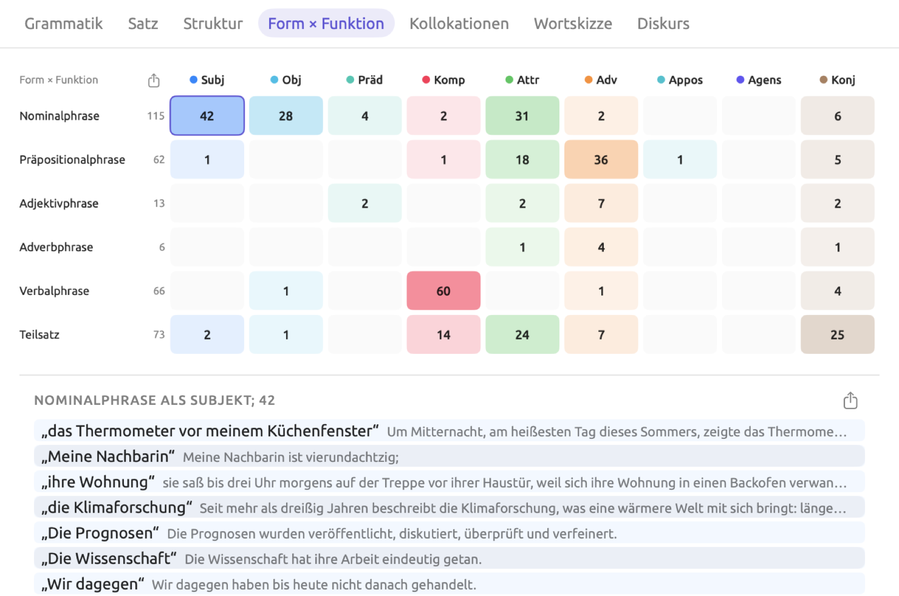
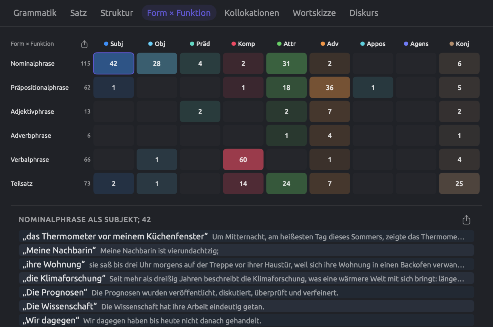
Die Matrix lesen
Die Zeilen stehen für die sechs Formen (Nominalphrase, Präpositionalphrase, Adjektivphrase, Adverbphrase, Verbalphrase und Teilsatz). Eine Zeile erscheint nur, wenn das Dokument gezählte Phrasen dieser Form enthält. Rechts neben dem Namen jeder Zeile steht die Summe aller Zahlen dieser Zeile.
Die Spalten sind die Funktionen in Kurzform, Subj (Subjekt), Obj (Objekt), Präd (Prädikativ), Komp (Komplement), Attr (adjektivisch), Adv (adverbial), Appos (Apposition), Agens (Agens) und Konj (Konjunkt), also neun der zehn grammatischen Funktionen der Lens Grammatische Funktion. Unter Grammatische Funktion in Kapitel 6, Lenses wird jede dieser Funktionen mit einem Beispiel vorgestellt.
Jede Zelle enthält die Zahl der Phrasen ihrer Form, die ihre Funktion erfüllen. Je kräftiger eine Zelle getönt ist, desto näher liegt ihre Zahl am Höchstwert der ganzen Matrix. Eine leere Zelle enthält keine Zahl; bewegen Sie den Mauszeiger darauf, erscheint Keine Treffer. In einem schmaleren Inspektor wird die Matrix kleiner und lässt sich waagerecht scrollen.
So sehen Sie die Phrasen hinter einer Zelle:
- Klicken Sie auf die Zelle.
- Klicken Sie in der Liste unter der Matrix auf einen Eintrag, um die Phrase in der Leseansicht auszuwählen.
- Klicken Sie erneut auf die Zelle, um die Liste zu schließen.
Über der Liste stehen der Phrasentyp, seine Funktion und die Gesamtzahl der Vorkommen, etwa NOMINALPHRASE ALS SUBJEKT; 42. Jeder Eintrag ist eine Phrase in Anführungszeichen, gefolgt von ihrem Satz. Die Liste enthält die ersten 40 Beispiele, darunter eine Zeile wie und 2 weitere.
Enthält Ihr Dokument keine Phrasen, die sich zählen lassen, zeigt die Facette statt der Matrix Noch keine Phrasen.
Wie Phrasen gezählt werden
Die Form einer Phrase ist ihre Bezeichnung aus der Grammatikanalyse, also genau die Bezeichnung, die ihr Teilbaum im Konstituentenbaum trägt. Die Funktion einer Phrase richtet sich nach der Funktion ihres Kopfworts, des ersten Wortes der Phrase, dessen eigener Kopf außerhalb der Phrase liegt. In der Phrase auf dem Hof hängen dem und Hof von Wörtern innerhalb der Phrase ab, auf dagegen von einem Wort außerhalb. Auf ist also das Kopfwort der Phrase, und seine Relation bestimmt die Funktion. Je nachdem, ob die Phrase an einem Verb hängt (wir arbeiten auf dem Hof) oder an einem Substantiv (die Felder auf dem Hof), ist die Funktion adverbial oder adjektivisch.
Gezählt werden alle Phrasen, auch eingebettete. Unterhalb der Satzebene enthält der Satz Unsere Regierenden haben auf die Warnungen mit Jahreszahlen geantwortet zum Beispiel vier Phrasen, von denen drei in die Matrix eingehen:
| Phrase | Kopfwort | Zeile | Spalte |
|---|---|---|---|
| Unsere Regierenden | Regierenden | Nominalphrase | Subj |
| auf die Warnungen mit Jahreszahlen geantwortet | geantwortet | Verbalphrase | Komp |
| auf die Warnungen mit Jahreszahlen | auf | nicht gezählt | nicht gezählt |
| mit Jahreszahlen | mit | Präpositionalphrase | Attr |
Die Präpositionalphrase auf die Warnungen mit Jahreszahlen bleibt außen vor, weil ihr Kopfwort auf als Präpositionalobjekt (op) an geantwortet hängt und diese Relation zu keiner Funktion passt. Auch der ganze Satz bleibt außen vor, denn sein Kopfwort ist die Wurzel haben, und die Wurzel hat in der Matrix keine Funktion. Ebenso entfällt jede Phrase, deren Kopfwort ein Konnektor ist.
In englischen Dokumenten gehört das Objekt einer Präposition, etwa dates in with dates, zu Obj, weil Obj dort sowohl die Objekte von Präpositionen als auch die von Verben umfasst. Dort trägt deshalb jede Präpositionalphrase eine Nominalphrase zur Zelle Nominalphrase × Obj bei, und diese Zelle gehört in den meisten Dokumenten zu den größten der Matrix. In deutschen Dokumenten fasst die Analyse die Wörter nach einer Präposition meist nicht zu einer eigenen Nominalphrase zusammen, wie die Warnungen im Beispielsatz zeigt.
Gibt die automatische Analyse einer Phrase zwei Bezeichnungen, erhält die Phrase in jeder der beiden Zeilen einen Eintrag. Ein Beispiel ist to protect the climate im englischen Satz If we want to protect the climate, das zugleich Teilsatz und Verbalphrase ist. Die Summe der Zeilen kann deshalb in manchen Fällen größer sein als die tatsächliche Zahl der Phrasen.
Mit der Matrix arbeiten
Ein hoher Anteil von Präpositionalphrasen in Attr (Soforthilfen in Höhe von 85 Millionen Euro) weist auf komplexe Nominalphrasen hin, wie sie in schriftlichen Berichten (etwa „Hitzebericht 2024“) üblich sind. Ein hoher Anteil von Teilsätzen in Adv (etwa weil …, wenn …, falls …) zeigt, dass Gründe, Zeitpunkte und Bedingungen ausgeführt werden. In englischen Dokumenten deutet es auf gesprochene Sprache hin, wenn die Nominalphrasen in Subj meist aus einem einzelnen Pronomen bestehen (das zeigt die Liste hinter der Zelle). In deutschen Dokumenten bildet ein einzelnes Pronomen dagegen meist keine eigene Nominalphrase und erscheint deshalb selten in dieser Liste.
Die Zahlen in den Zellen sind absolute Häufigkeiten; längere Dokumente haben daher durchweg höhere Zahlen. In „Uns läuft die Zeit davon“ sind 42 der insgesamt 115 Nominalphrasen Subjekte, ein Anteil von 42 ÷ 115, also etwa 37 %.
Die Matrix exportieren
Oben links an der Matrix, neben Form × Funktion, befindet sich eine Schaltfläche, mit der Sie die ganze Matrix als PNG, PDF oder CSV exportieren. Beim Export als CSV erhalten Sie eine Datei mit einer Zeile für jede Form und den Spalten Form und Gesamt sowie einer Spalte für jede Funktion unter ihrem vollständigen Namen. Der vorgeschlagene Dateiname ist form-function.
In der Liste unter der Matrix finden Sie eine weitere Exportschaltfläche, die alle Phrasen der ausgewählten Zelle als CSV-Datei exportiert. Hier besteht der vorgeschlagene Dateiname aus der Form und der Funktion, verbunden durch einen Bindestrich, etwa Nominalphrase-Subjekt. Diese CSV-Datei enthält die Spalten Satz (die Satznummer), Phrase und Text (der vollständige Satz).
Die Facette Kollokationen
Die Kollokate eines Wortes sind Wörter, die häufiger in seiner Umgebung vorkommen, als bei rein zufälliger Verteilung zu erwarten wäre. In „Uns läuft die Zeit davon“ erscheint Klima etwa in Das Klima verändert sich, das Klima zu schützen, das Klima aufgeheizt haben und das Klima schützen wollen. Die Kollokate eines Wortes zeigen, mit welchen Themen und festen Wendungen es typischerweise auftritt, und daran lässt sich ablesen, wie die schreibende Person das Thema auffasst. Das untersuchte Wort heißt Knotenwort.
Die Facette Kollokationen sucht Kollokate innerhalb des aktiven Dokuments. Um die Kollokate eines Wortes in mehreren Dokumenten zu finden, verwenden Sie die Vorlage Kollokationen unter Abfragen Ihres Sets (siehe Kollokationen in Kapitel 16, Abfrageergebnisse und Statistik). Auch die Facette Wortskizze findet Partner eines Wortes; anders als die Facette Kollokationen stützen sich Wortskizzen aber auf grammatische Relationen statt auf den Abstand (siehe Kapitel 12, Wortskizze).
Die Kollokate eines Wortes auflisten
Die folgende Abbildung zeigt die Kollokate von Klima in „Uns läuft die Zeit davon“, geordnet nach Log-Likelihood.
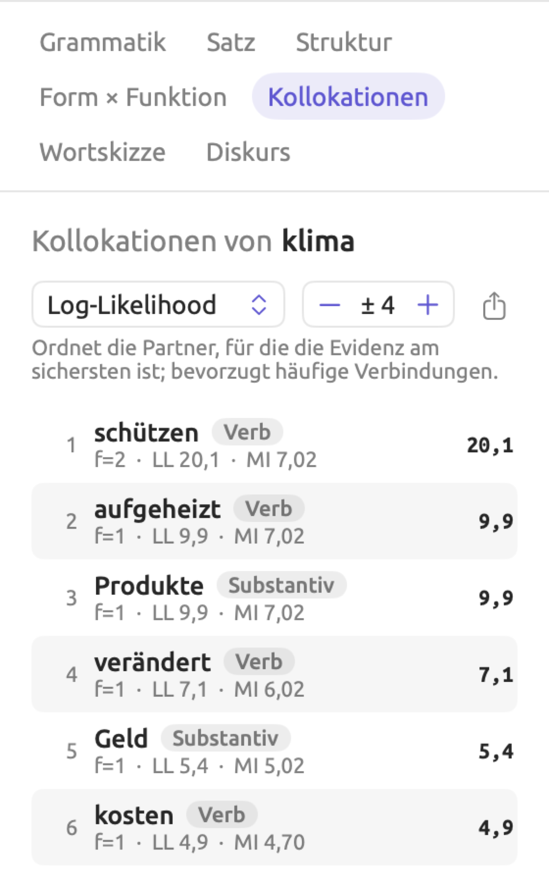
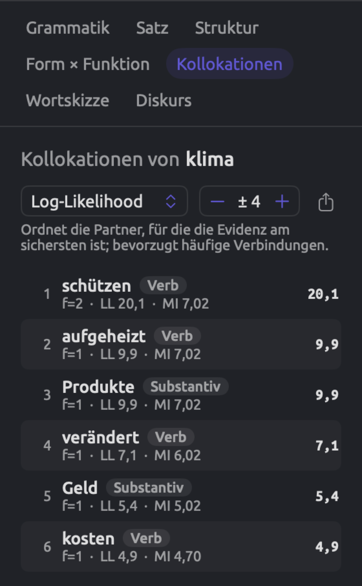
So listen Sie die Kollokate eines Wortes auf:
- Wählen Sie das Knotenwort in der Leseansicht aus.
- Klicken Sie auf Kollokationen. Die Überschrift nennt das Lemma, etwa Kollokationen von klima, denn jede Form des Wortes zählt mit (Klima ebenso wie Klimas, und bei einem Wort wie handeln das Verb ebenso wie das Substantiv Handeln).
- Wählen Sie im Menü oben links ein Maß. Zu Beginn steht dort Log-Likelihood; die anderen Maße sind MI, t-Wert und logDice (siehe Die Assoziationsmaße weiter unten in diesem Kapitel). Eine Zeile unter den Bedienelementen sagt, welche Art von Kollokat das gewählte Maß bevorzugt.
- Stellen Sie mit den Schaltflächen − und + rechts die Größe des Fensters ein. Zu Beginn steht dort ± 4, möglich sind Werte von ± 1 bis ± 10 (siehe Was als nahe gilt weiter unten).
Die Liste zeigt alle gefundenen Kollokate, geordnet nach dem gewählten Maß, den höchsten Wert zuerst. Jede Zeile enthält:
- den Rang;
- das Kollokat, gefolgt von seiner Wortart;
- eine Zeile wie f=8 · LL 36,8 · MI 4,32, in der f für die Häufigkeit des Kollokats in der Nähe des Knotenworts steht, LL für die Log-Likelihood und MI für die Mutual Information;
- rechts den Wert des gewählten Maßes.
Die Kollokate werden wie das Knotenwort nach Lemmas gezählt. Jedes erscheint in der Schreibung seines ersten Vorkommens im Dokument und mit der Wortart, die es dort hat.
Ein Klick auf eine Zeile wählt das erste Vorkommen des Kollokats im Dokument aus. Die Facette folgt der Auswahl und zeigt dann die Kollokate des angeklickten Wortes. Wählen Sie Klima erneut aus, um zurückzukehren.
Die Facette behält Maß und Fenster bei, solange Sie andere Wörter auswählen. Wechseln Sie die Facette oder das Dokument, springen beide auf Log-Likelihood und ± 4 zurück. Eignet sich kein Wort als Kollokat, zeigt die Facette Keine Inhaltskollokationen innerhalb von ± 4.
Die Exportschaltfläche rechts neben der Fenstergröße exportiert die aktuellen Kollokate als CSV-Datei, benannt nach dem Knotenwort, etwa collocates-klima. Die Reihenfolge der Zeilen entspricht der Sortierung der Liste. Die Spalten sind Rang, Kollokat, Wortart (als Kürzel wie NOUN), Häufigkeit (f), Erwartet, Log-Likelihood, MI, MI3, t-Wert, z-Wert, Dice und logDice.
Was als nahe gilt
Für jedes Vorkommen des Knotenworts betrachtet LemmaLoom so viele Positionen davor und danach, wie die Fenstergröße angibt, und zwar innerhalb desselben Satzes. Bei ± 4 sind das die vier Tokens vor dem Knotenwort und die vier danach. Jedes Token belegt eine Position, auch ein Satzzeichen oder ein Stoppwort. Stoppwörter sind sehr häufige Wörter wie der, und, von und wir; jede Sprache hat ihre eigene Liste. Satzzeichen, Stoppwörter und weitere Vorkommen des Knotenworts zählen nicht als Kollokate.
Nehmen Sie Natürlich wird es Geld kosten, das Klima zu schützen. mit Klima als Knotenwort und einem Fenster von ± 4. Die Positionen vor dem Knotenwort belegen Geld, kosten, das Komma und das; danach folgen nur noch zu, schützen und der Punkt, denn dort endet der Satz. Das und zu sind Stoppwörter, daher zählt das Fenster drei Wörter (Geld, kosten und schützen).
Stehen zwei Vorkommen des Knotenworts nah beieinander, liegt jedes Wort zwischen ihnen in zwei Fenstern zugleich und wird doppelt gezählt.
Die Vorlage Kollokationen in Abfragen zählt anders. Dort belegen nur Wörter Positionen; Stoppwörter und weitere Vorkommen des Knotenworts werden zu Kollokaten, und das Fenster steht zu Beginn auf 5 statt auf 4. Die beiden Listen können sich für dasselbe Wort daher deutlich unterscheiden.
Die Assoziationsmaße
Die Maße der Facette beziffern, wie oft ein Kollokat in der Nähe des Knotenworts vorgekommen ist, verglichen damit, wie oft es allein durch Zufall vorgekommen wäre. Sie unterscheiden sich darin, wie sie die Größe dieses Unterschieds gegen die Zahl der Beobachtungen abwägen, auf der er beruht, und jedes Maß bevorzugt deshalb eine bestimmte Art von Partner.
Angenommen, eine erfundene Magazinreportage von 5.000 Wörtern über eine sommerliche Hitzewelle enthält das Wort Klima 20-mal. Die Zahlen der folgenden Rechnungen sind frei erfunden, damit die Rechnungen einfach bleiben; die Dokumente im Beispielprojekt sind deutlich kürzer. Bei ± 4 enthalten die Fenster insgesamt 100 gezählte Wörter. Angenommen, schützen kommt im Dokument 20-mal vor, und 8 dieser Vorkommen fallen in die Fenster um das Knotenwort Klima. Das ergibt die folgenden vier Zahlen:
- , wie oft schützen in den Fenstern vorkommt (das f seiner Zeile);
- , die Gesamtzahl der gezählten Wörter in allen Fenstern;
- , wie oft schützen insgesamt im Dokument vorkommt;
- , die Gesamtzahl der gezählten Wörter im Dokument, ohne Satzzeichen und Stoppwörter.
Erwartete Häufigkeit
Wäre schützen zufällig über die Reportage verteilt, bekämen die Fenster einen ihrem Umfang entsprechenden Anteil an den Vorkommen von schützen. Da sie 100 der insgesamt 5.000 Wörter enthalten, entfielen auf sie 0,4 der 20 Vorkommen von schützen, wie die folgende Gleichung für die erwartete Häufigkeit zeigt:
Die erwartete Häufigkeit muss keine ganze Zahl sein, denn sie ist ein Durchschnittswert. Im Durchschnitt wäre also weniger als ein Vorkommen von schützen in den Fenstern zu erwarten, tatsächlich sind es aber 8. Alle folgenden Maße beziffern, wie weit 8 Vorkommen von einer Erwartung von 0,4 Vorkommen abweichen. Der Export führt in der Spalte Erwartet.
Mutual Information
Die Mutual Information, im Menü MI, drückt aus, wie viel häufiger das Kollokat in der Nähe des Knotenworts vorkommt als erwartet, gemessen in Verdopplungen:
Der Logarithmus zur Basis 2, geschrieben , zählt Verdopplungen; so ist , weil 2 × 2 × 2 = 8. Ebenso ist ; Werte über 1 ergeben positive Logarithmen, Werte zwischen 0 und 1 negative. Hat Ihr Taschenrechner keine Taste für , teilen Sie den Logarithmus des Werts durch den Logarithmus von 2, also .
Für schützen ist ; das Wort kommt also zwanzigmal so oft in der Nähe von Klima vor, wie der Zufall vorhersagt. Da 20 zwischen 16 (vier Verdopplungen) und 32 (fünf) liegt, ist . Ein MI-Wert von 0 bedeutet, dass das Wort so oft vorkommt wie erwartet, und jede Erhöhung um eins steht für eine Verdopplung dieser Häufigkeit.
MI benachteiligt Beziehungen, die nicht exklusiv sind, und bevorzugt dadurch seltene Wörter. Angenommen, aufheizen kommt in der Reportage zweimal vor, beide Male in der Nähe von Klima. Dann ist seine erwartete Häufigkeit , und es erhält eine Mutual Information von , mehr als schützen. Abgesehen von Wörtern, die in überlappenden Fenstern doppelt gezählt werden, kann kein anderes Wort höher liegen. Für ein Wort, das ausschließlich zusammen mit Klima vorkommt, gilt , also , ob es nun einmal oder 20-mal vorkommt.
t-Wert
Der t-Wert teilt die Differenz zwischen beobachteter Häufigkeit und Erwartung durch die Quadratwurzel der beobachteten Häufigkeit. Die Gleichung lautet:
Für schützen ist . Da die Wurzel im Nenner langsamer wächst als die Zahl darüber, kann der t-Wert eines Paares umso höher werden, je öfter es beobachtet wird. Der t-Wert bevorzugt deshalb häufige Paare, die regelmäßig vorkommen. In der Korpuslinguistik gilt ein t-Wert über 2 üblicherweise als Zeichen dafür, dass das Paar mehr als Zufall ist. Für aufheizen ist , also nicht über 2, obwohl beide Vorkommen in der Nähe von Klima liegen.
logDice
Der Dice-Koeffizient vergleicht, wie oft sich die beiden Wörter treffen (), mit der Zahl der Wörter in den Fenstern zuzüglich der Vorkommen des Kollokats ():
Dice liegt zwischen 0 und 1. Ein Dice-Wert von 1 bedeutet, dass alle Wörter in den Fenstern Vorkommen des Kollokats sind und jedes Vorkommen des Kollokats in die Fenster fällt. logDice verwendet eine Skala bis 14, und jeder Schritt um 1 nach unten entspricht einer Halbierung von Dice.
Für das Kollokat schützen ist zum Beispiel ; sein Logarithmus zur Basis 2 liegt bei etwa −2,91, und der logDice-Wert beträgt damit .
Da logDice die Gesamtlänge des Dokuments () nicht berücksichtigt, ändern sich logDice-Werte bei unterschiedlicher Textlänge meist nur wenig. Von der Zahl der Wörter in den Fenstern () hängt logDice aber ab.
Log-Likelihood
Die Log-Likelihood ist das Maß, das die Liste zu Beginn verwendet. Im Kern gibt sie an, wie stark die Belege dafür sind, dass die Häufigkeit des Kollokats um das Knotenwort nicht bloßer Zufall ist. Sie betrachtet alle Kombinationen aus „ist schützen oder nicht“ und „liegt in einem Fenster oder anderswo“. Jedes Wort fällt in genau eine der vier folgenden Zellen:
| schützen | Andere Wörter | Summe | |
|---|---|---|---|
| In den Fenstern | 8 | 92 | 100 |
| Anderswo | 12 | 4.888 | 4.900 |
| Summe | 20 | 4.980 | 5.000 |
Die 92 ist , die Zahl der anderen Wörter in den Fenstern. Die 12 ist , die Zahl der Vorkommen von schützen anderswo. Die 4.888 ist , alles Übrige. Jede Zelle hat eine erwartete Häufigkeit, die wie oben berechnet wird, nämlich als Zeilensumme mal Spaltensumme, geteilt durch die Gesamtsumme. Das ergibt der Reihe nach 0,4 (für schützen in den Fenstern, , das von oben), 99,6, 19,6 und 4.880,4.
Der Wert misst, wie weit die tatsächlichen Häufigkeiten der Zellen von ihren Erwartungen entfernt liegen:
Dabei ist die beobachtete Häufigkeit einer Zelle, ihre erwartete Häufigkeit, und (das große griechische Sigma) bedeutet „über die vier Zellen aufsummieren“. Mit ist schließlich der natürliche Logarithmus gemeint, auf Taschenrechnern die Taste ln. Wie ergibt er 0, wenn sein Argument 1 ist, einen positiven Wert, wenn es größer ist, und sonst einen negativen. Entspricht die beobachtete Häufigkeit einer Zelle genau ihrer Erwartung, kommt zur Summe nichts hinzu; liegt sie darüber, kommt ein positiver Beitrag hinzu, liegt sie darunter, ein negativer. Da die positiven Beiträge die negativen immer überwiegen, kann der Wert nicht negativ werden. Man schreibt ihn , wobei die 2 nicht bedeutet, dass etwas quadriert wird.
Für schützen lauten die vier Teile:
Mit 2 multipliziert ergibt das etwa 36,8, den Wert in der Zeile von schützen. Durch den Faktor 2 und den natürlichen Logarithmus passt der Wert zu den Einträgen der Chi-Quadrat-Tabelle mit 1 Freiheitsgrad, einer Tabelle, die man sonst für Chi-Quadrat-Tests an 2 × 2-Kreuztabellen verwendet.
Nach dieser Tabelle erreichen Wörter, die nichts miteinander zu tun haben, einen Wert von 3,84 oder mehr in 5 % der Fälle allein durch Zufall; 6,63 entspricht 1 % und 10,83 entspricht 0,1 %, also 1 von 1.000. Einen solchen Prozentsatz nennt man p-Wert; er gibt an, wie überraschend ein bestimmter Wert wäre, wenn die beiden Wörter nichts miteinander zu tun hätten. Beachten Sie aber, dass der p-Wert nicht angibt, ob die Beziehung zwischen den beiden Wörtern tatsächlich besteht; er sagt nur, wie überraschend eine Beobachtung unter der Annahme der Unabhängigkeit wäre. Im Beispiel erreicht schützen den Wert 36,8, deutlich mehr als alle drei genannten Schwellen.
Da die Liste jedes in Frage kommende Wort prüft, erreichen von 100 völlig unabhängigen Wörtern im Durchschnitt etwa 5 den Wert 3,84 allein durch Zufall. Außerdem setzen die Werte der Chi-Quadrat-Tabelle voraus, dass die erwarteten Häufigkeiten nicht winzig sind.
Der Wert zeigt nicht, in welche Richtung die Häufigkeiten abweichen. Kommt Hitze in der Reportage 200-mal vor, aber nur einmal in der Nähe von Klima, ist ihre erwartete Häufigkeit , ihre Log-Likelihood 3,4 und ihre MI . Eine negative MI in der Zeile zeigt, dass das Wort seltener in der Nähe des Knotenworts vorkommt, als der Zufall vorhersagen würde.
Die Log-Likelihood bevorzugt große Unterschiede und hohe Häufigkeiten. Deshalb ist sie das voreingestellte Maß. Aufheizen zum Beispiel kommt 50-mal so oft vor wie erwartet, aber nur zweimal; seine Log-Likelihood beträgt 15,7. Kommt dagegen Mensch in der 5.000 Wörter langen Reportage 100-mal vor, aber nur 6-mal in der Nähe von Klima, liegt seine Erwartung bei 2; es kommt also dreimal so oft vor wie erwartet. Dreimal so oft bei sechs Vorkommen ist ein schwächerer Beleg als fünfzigmal so oft bei zwei, daher erreicht die Log-Likelihood hier nur 5,5.
Die Maße im Vergleich
Je nach Maß ergibt sich für die drei Wörter eine andere Reihenfolge:
| Kollokat | Log-Likelihood | MI | t-Wert | logDice | |||
|---|---|---|---|---|---|---|---|
| schützen | 8 | 20 | 0,4 | 36,8 | 4,32 | 2,7 | 11,09 |
| aufheizen | 2 | 2 | 0,04 | 15,7 | 5,64 | 1,4 | 9,33 |
| Mensch | 6 | 100 | 2 | 5,5 | 1,58 | 1,6 | 9,94 |
Log-Likelihood setzt schützen an die erste und aufheizen an die zweite Stelle, weil selbst zwei Vorkommen bei einer erwarteten Häufigkeit von 0,04 unwahrscheinlich sind. Da beide Vorkommen von aufheizen in der Nähe von Klima liegen, setzt MI dieses Wort an die erste Stelle. Der t-Wert dagegen ist bei so wenigen Vorkommen zurückhaltend und stellt Mensch vor aufheizen, weil sechs Vorkommen mehr Sicherheit bieten als zwei. logDice stimmt hier mit dem t-Wert überein.
Beginnen Sie in der Regel mit Log-Likelihood. Verwenden Sie logDice, wenn Sie ein Maß brauchen, das sich zwischen Dokumenten vergleichen lässt, und t-Wert, wenn Sie die häufigsten Partner eines bestimmten Wortes suchen. MI ist für exklusive Partnerschaften gedacht; prüfen Sie dabei die f-Werte.
Der CSV-Export enthält drei weitere Maße. MI3 ist ; durch die dritte Potenz wiegen häufige Vorkommen schwerer als bei MI (10,32 für schützen). Der z-Wert wird als berechnet. Bei seltenen Vorkommen ergibt das extreme Werte, weil der Nenner verschwindend klein wird (12,02 für schützen). Dice schließlich ist der Koeffizient ohne Logarithmus (0,133 für schützen). Hilfe ▸ Glossar definiert jedes Maß unter Assoziationsmaße, und Assoziationsmaße für Wörter in Kapitel 27, Statistik im Überblick stellt sie nebeneinander.
Die Facette Diskurs
Diskurs ist eine Facette für das ganze Dokument, gedacht für Fragen zum Aufbau und Stil des Textes selbst. Die Facette hat drei Bereiche, die Sie mit den Schaltflächen oben auswählen:
- Kohäsion zeigt, wie ein Satz mit den vorangehenden Sätzen zusammenhängt.
- Metadiskurs listet die Wörter auf, mit denen Sprechende das Gesagte kommentieren und sich an ihr Publikum wenden.
- Rhetorik umfasst stilistische Entscheidungen, etwa Passivsätze, Nominalisierungen und vorangestellte Satzeröffnungen (eine Phrase vor dem Subjekt). Bei einer Nominalisierung wird eine Handlung zu einem Substantiv; Warnung, abgeleitet von warnen, ist ein Beispiel.
Die Kategorien jedes Bereichs werden im Text durch die Lenses gleichen Namens annotiert. Kohäsion und die beiden folgenden Abschnitte in Kapitel 6, Lenses beschreiben im Einzelnen, wie dabei annotiert wird.
Die Befunde stammen von eingebauten Analysatoren gleichen Namens, die bei der Indizierung laufen. Während die Befunde geladen werden, zeigt die Facette eine Fortschrittsanzeige. Läuft der Analysator für das Dokument nicht, etwa weil seine Ergebnisse in Dokumenteigenschaften entfernt wurden, erscheint je nach Analysator Keine Kohäsionsdaten, Kein Metadiskurs oder Keine rhetorischen Mittel (siehe Kapitel 21, Analyse und Indizierung). Dieselben Meldungen erscheinen auch, wenn das Dokument schlicht nichts dergleichen enthält.
Ist für die Schaltflächen der Bereiche kein Platz, tritt ein Menü mit denselben Einträgen an ihre Stelle. Ihre Wahl wird für jedes Dokument, das Sie untersuchen, getrennt gespeichert.
Die Liste der Kategorien
Alle drei Bereiche sind gleich aufgebaut. Direkt unter den Schaltflächen der Bereiche liegt das Feld Suchen, darunter folgt für jede Kategorie mit Befunden eine Zeile mit der Farbe der Kategorie, ihrem Namen und der Zahl ihrer Befunde. Zu Beginn sind die Zeilen der Kategorien zugeklappt.
So sehen Sie die Befunde einer Kategorie:
- Klicken Sie auf ihre Zeile, um sie aufzuklappen. Unter Metadiskurs und Rhetorik erscheint zuerst eine Zeile, die die Kategorie beschreibt.
- Klicken Sie auf einen Befund, um seinen Satz in der Leseansicht auszuwählen.
- Um die Kategorie im Text annotiert zu sehen, klicken Sie auf Im Text hervorheben (siehe Eine Kategorie hervorheben weiter unten).
Jede Kategorie zeigt ihre ersten 200 Befunde, gefolgt von einer Zeile wie und 38 weitere. Wechseln Sie zu einem anderen Bereich, klappen die geöffneten Kategorien wieder zu.
Kohäsion
Kohäsion ordnet jeden Satz nach seinem Thema ein, also nach dem, womit der Satz beginnt. Als Thema gilt im Englischen das Subjekt des Hauptverbs mit allen seinen Wörtern, im Deutschen alles vor dem Verb (oder das Subjekt, wenn vor dem Verb nichts steht) und im Chinesischen das Topik oder, wenn die Analyse kein Topik findet, das Subjekt (siehe Kohäsion in Kapitel 6, Lenses). Enthält das Thema ein Personal- oder Possessivpronomen der dritten Person (sie, ihre) oder ein Demonstrativum (diese) oder wiederholt es ein Wort aus einem der beiden vorangehenden Sätze, ist der Satz verknüpft. Andernfalls eröffnet er ein neues Thema.
Zwei Zahlen über den Kategorien geben die Summen der verknüpften Sätze und der neuen Themen an. Für „Streit um die CO2-Steuer“ lauten sie 12 verknüpft und 23 neues Thema. Der erste Satz eines Dokuments, unter Eröffnung, zählt als verknüpft.
Die Kategorien erscheinen in der folgenden Reihenfolge, jeweils gefolgt von den Sätzen, die zu ihnen gehören. Unter jedem Satz erklärt eine Zeile, warum er so eingeordnet ist:
| Kategorie | Zeile unter dem Satz |
|---|---|
| Eröffnung | Eröffnet die Passage |
| Pronominalbezug | Bekannt: Pronomen „Sie“, mit dem jeweiligen Pronomen |
| Possessive Verknüpfung | Bekannt: Possessiv „Ihre“ |
| Demonstrativer Bezug | Bekannt: „Diese“ verweist zurück |
| Wiederholtes Wort | Bekannt: wiederholt „Klima“, mit dem wiederholten Wort |
| Nullanapher | Bekannt: das ausgelassene Subjekt führt das Thema fort (nur Chinesisch) |
| Neues Thema | Neues Thema im Subjekt; mögliche Kohäsionslücke |
Lesen Sie die Sätze unter Neues Thema nacheinander. In „Streit um die CO2-Steuer“ können Häufungen neuer Themen anzeigen, wo der Text springt, also Lücken, die Lesende ohne jede Hilfe überbrücken müssen.
Beachten Sie aber, dass ein Satz ohne prüfbares Thema (im Englischen ohne Subjekt, im Deutschen ohne Subjekt und ohne Wörter vor einem finiten Verb), zum Beispiel Etwa fünfmal., hier ebenfalls als Neues Thema gilt; solche Sätze sind in Transkripten häufig. In chinesischen Texten kann ein Satz stattdessen als Nullanapher gelten, wenn sein ausgelassenes Subjekt das vorige Thema fortführt. Die Kategorie Kohäsionsprüfung unter Rhetorik berücksichtigt sie nicht und listet nur neue Themen auf, die ein Subjekt und mindestens sechs Wörter haben.
Metadiskurs
Metadiskurs ordnet seine Befunde den Kategorien Abschwächer (vielleicht), Verstärker (eindeutig), Einstellungsmarker (leider), Konnektiv (jedoch) und Einbeziehung (Sie, wir) zu. Bei deutschen Texten kommt unter Metadiskurs außerdem Modalpartikel (ja, doch) hinzu, bei chinesischen Satzschlusspartikel (吗, 吧). Jeder Befund zeigt das Wort in Anführungszeichen und seinen Satz.
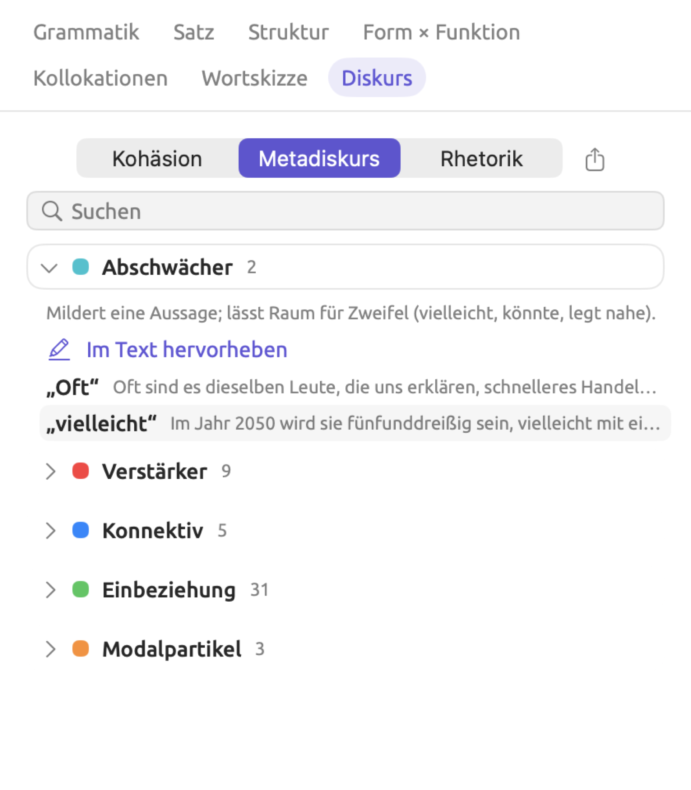
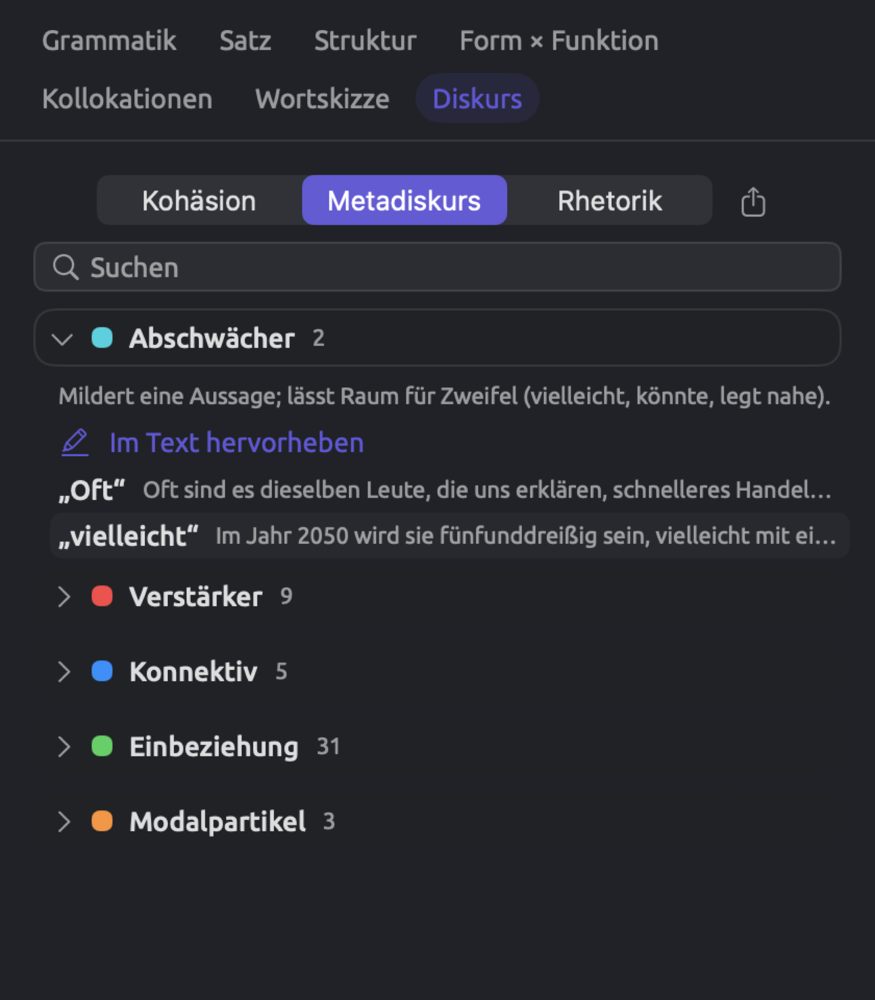
Vergleichen Sie die Metadiskurs-Kategorien eines Dokuments, erhalten Sie einen Eindruck von der Haltung der schreibenden Person zu ihrem Thema. Verwendet eine Kolumne viele Abschwächer (vielleicht, wahrscheinlich, vermutlich) und wenige Verstärker (eindeutig, zweifellos), kann sie zögerlich klingen. Einbeziehung ist in politischen Reden und Meinungskolumnen oft die größte Metadiskurs-Kategorie, weil sie sowohl wir als auch Sie umfasst.
Die Listen, nach denen LemmaLoom den Metadiskurs zählt, sind eingebaut. Möchten Sie Abschwächer mit einer eigenen Wortliste zählen, etwa mit dem Wörterbuch „Heckenausdrücke“ aus dem Beispielprojekt, lesen Sie Kapitel 19, Wörterbücher. Anders als die eingebaute Liste enthält das Wörterbuch „Heckenausdrücke“ auch ich glaube (unter „Abschwächer“). Die Zahlen dieser Facette beziehen sich nur auf das ausgewählte Dokument. Zahlen aus unterschiedlich langen Dokumenten zu vergleichen, kann ohne Normierung in die Irre führen. Zum Beispiel ergeben 6 Abschwächer in einer Kolumne mit 600 Wörtern 6 ÷ 600 × 1.000 = 10 Vorkommen pro 1.000 Wörter (siehe Maße in Kapitel 16, Abfrageergebnisse und Statistik).
Rhetorik
Rhetorik hat eine Kategorie für jedes der dreizehn Mittel der Lens Rhetorik, das im Dokument vorkommt, darunter Passiv, Nominalisierung, Betonungswort und Korrelativpaar (siehe Rhetorik in Kapitel 6, Lenses). Nach dem Mittel Absolute Konstruktion wird nur im Englischen gesucht, nach dem Mittel Periodischer Satz (Sätze, deren Hauptverb hinausgezögert wird) im Englischen und im Deutschen.
Die Befunde enthalten alle gefundenen Wörter sowie Anmerkungen, die begründen, warum diese Wörter als Beispiel für das Mittel gelten. Ein Passiv ohne Handelnden erhält zum Beispiel die Anmerkung Passiv ohne Handelnden; wer handelt, bleibt ganz unerwähnt. Wird der Handelnde in einer Phrase mit by genannt (im Deutschen mit von oder durch), gibt die Anmerkung das wieder. Bei periodischen Sätzen im Englischen nennt die Anmerkung das Hauptverb des Satzes und seine Stelle im Satz. Die Anmerkungen erscheinen in der Sprache der Benutzeroberfläche, bei deutschen Dokumenten mit werden-Passiv etwa werden-Passiv ohne Handelnden; wer handelt, bleibt ganz unerwähnt. Abfragen und eigene Analysatoren erhalten die Anmerkungen auf Englisch.
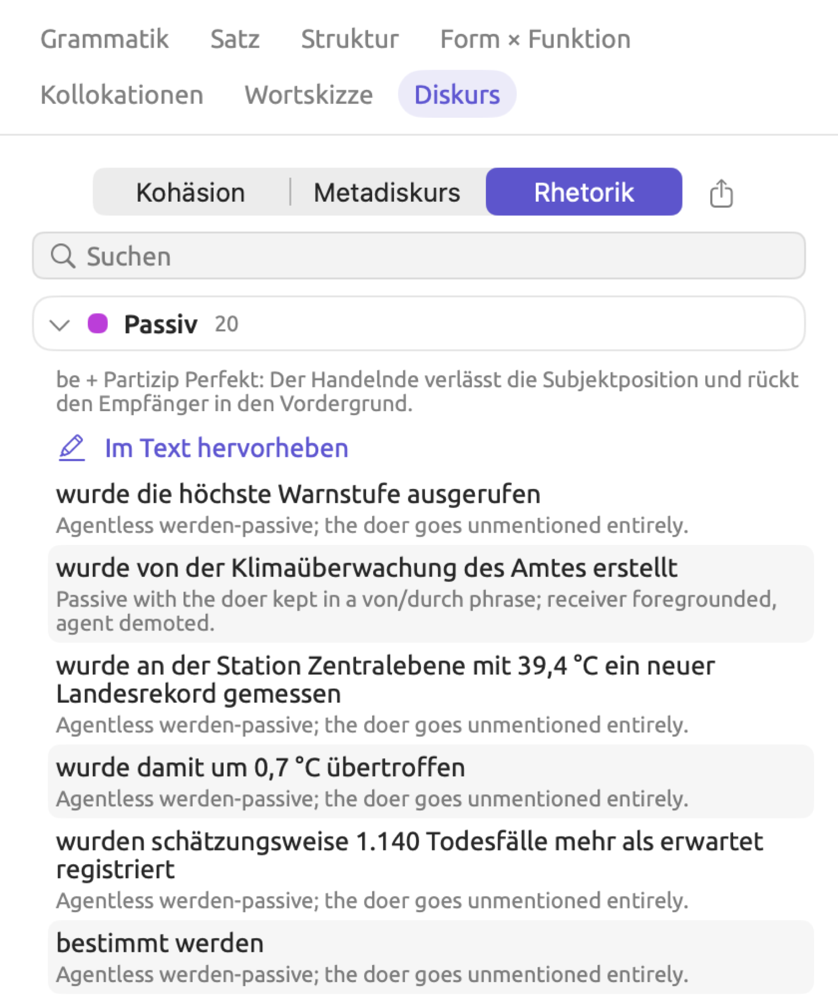
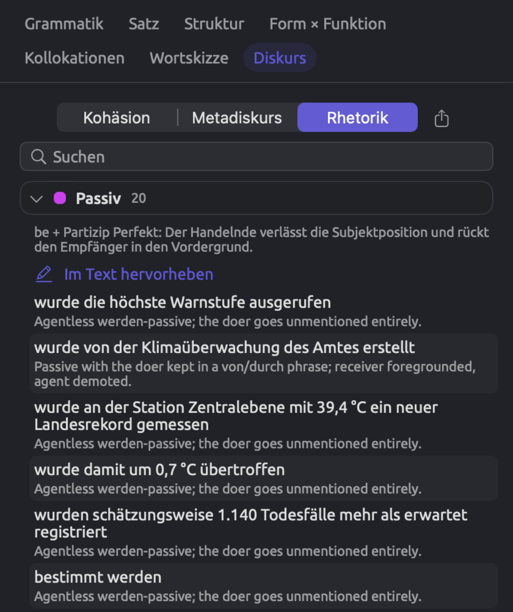
Die Lens annotiert pro Wort nur ein Mittel, die Facette dagegen listet jeden Befund auf, auch wenn sich Befunde überschneiden. Dieselben Wörter können in der Facette deshalb unter zwei verschiedenen Mitteln erscheinen.
Für Fragen danach, wer handelt, ist Passiv die Kategorie, die Sie lesen sollten. In „Hitzebericht 2024“ wurde in 63 Gemeinden die Bewässerung eingeschränkt, und der nationale Hitzeaktionsplan wurde am 9. Juli aktiviert. Keiner der beiden Sätze sagt, wer die Bewässerung eingeschränkt oder den Plan aktiviert hat. Nominalisierung funktioniert ähnlich, nur bei Substantiven statt bei Verben. Der Bericht hält fest, dass die Zuständigkeit für die Betreuung allein lebender älterer Menschen nicht eindeutig geregelt war; Zuständigkeit und Betreuung stehen unter Nominalisierung, und keines der beiden Wörter sagt, wer sich um diese Menschen hätte kümmern sollen. Ähnliche Muster in Ihren eigenen Dokumenten zeigen, wo Schreibende die Handelnden weglassen.
Die Liste durchsuchen
Mit dem Feld Suchen grenzen Sie die Liste nach Ihrer Eingabe ein. Eine Kategorie, deren Name Ihre Eingabe enthält, wird vollständig angezeigt. Jede andere Kategorie zeigt nur die Befunde, deren Text oder Anmerkung die Eingabe enthält, und passt die Zahl daneben entsprechend an. Groß- und Kleinschreibung spielen beim Abgleich keine Rolle. Alle passenden Kategorien klappen auf und bleiben während der Suche geöffnet. Passt nichts, zeigt die Liste Keine Treffer. Unter Kohäsion verschwinden die Zahlen der verknüpften Sätze und der neuen Themen während der Suche vorübergehend.
Eine Suche nach abschwächer zeigt zum Beispiel alles in der Kategorie Abschwächer unter Metadiskurs. Eine Suche nach vielleicht zeigt in jeder Kategorie nur die Befunde, deren Wort oder Satz vielleicht enthält.
Eine Kategorie hervorheben
Im Text hervorheben zeigt eine geöffnete Kategorie in der Leseansicht:
- Ist die passende Lens gerade deaktiviert, wird sie nur für diese Kategorie aktiviert.
- Ist die Lens gerade aktiviert, wird sie auf diese Kategorie eingeschränkt.
- Ist die Lens gerade nur für diese Kategorie aktiviert, wird sie wieder für alle Kategorien aktiviert.
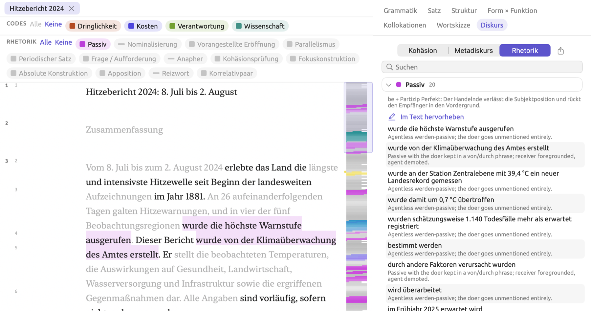
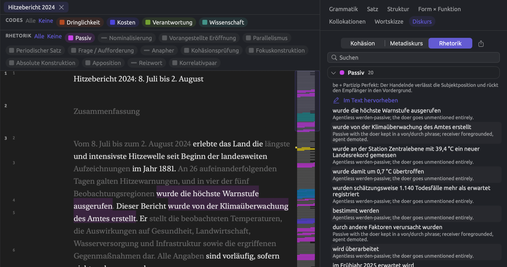
In der Legende der Lens sehen Sie, welche ihrer Lenslets deaktiviert sind (siehe Auswählen, welche Aspekte aktiviert sind in Kapitel 6, Lenses). Um die annotierten Sätze hintereinander zu sehen, klappen Sie das Dokument zusätzlich mit der Schaltfläche ein, deren Tooltip Nur die Sätze anzeigen, die eine Lens annotiert lautet (siehe Nur annotierte Sätze anzeigen in Kapitel 6, Lenses).
Die Befunde exportieren
Ganz rechts neben den Schaltflächen der Bereiche befindet sich eine Exportschaltfläche, mit der Sie den aktuellen Bereich als CSV-Datei sichern. Die Datei enthält alle Befunde aller Kategorien dieses Bereichs, unabhängig von Ihrer Suche und von der Obergrenze von 200 Befunden. Der vorgeschlagene Dateiname ist der Name des Dokuments mit dem Bereich am Ende, etwa Hitzebericht 2024-Rhetorik.
Die CSV-Datei hat vier Spalten, Kategorie, Satz (die Nummer des Satzes im Dokument), Text und Detail. Was die beiden letzten enthalten, hängt vom Bereich ab:
| Bereich | Text | Detail |
|---|---|---|
| Kohäsion | Der Satz | Die Zeile darunter, etwa Bekannt: wiederholt „Klima“ |
| Metadiskurs | Das gefundene Wort | Der Satz |
| Rhetorik | Die gefundenen Wörter | Die Anmerkung |